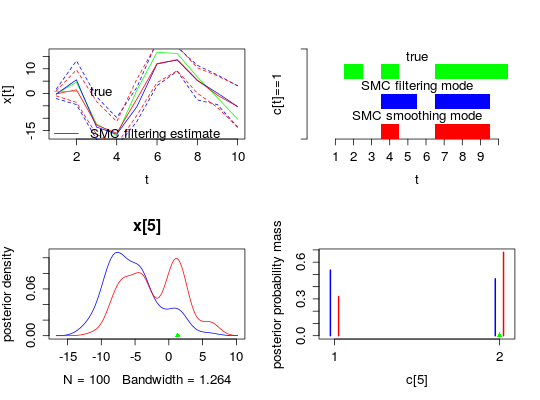

biips_smc_samples(object, ...)"biips_smc_samples"(object, variable_names, n_part, type = "fs", rs_thres = 0.5, rs_type = "stratified", ...)
biips model object as returned by
biips_model.c('var1', 'var2[1]',
'var3[1:10]', 'var4[1, 5:10, 3]'). Subset indices must define
a valid subset of the variables of the model.'f' (filtering),
's' (smoothing) and/or 'b' (backward smoothing). Select the
type of particles to be monitored. (default = 'fs')rs_thres is in [0,1], resampling
occurs when ESS < rs_thres * n_part. rs_thres is in
[2,n_part], resampling occurs when ESS < rs_thres. 'stratified', 'systematic',
'residual', 'multinomial'. (default = 'stratified')smcarray.fsb.list object, with one named member for
each monitored variable in the variable_names argument and a member
named log_marg_like with an estimate of the log marginal likelihood.
A smcarray.fsb.list object is a named list of
smcarray.fsb objects for different variables. Each
smcarray.fsb object is a named list of smcarray
object, with one member for each type of monitoring (f, s
and/or b) in the type argument. Assuming dim is the
dimension of the monitored variable, a smcarray object is a
list with the members:
c(dim, n_part) with the
values of the particles.c(dim, n_part) with
the weights of the particles.dim with Effective Sample Sizes (ESS)
of the particles set.dim with
logicals indicating discreteness of each component.dim with sampling iterations of
each component.dim. each member is a
character vector with the respective conditioning variables of the
node array component.
'filtering',
'smoothing' or 'backward_smoothing').For instance, if out_smc is a smcarray.fsb.list object,
one can access the values of the smoothing particles for the variable
'x' with: out_smc$x$s$values.
Run a sequential Monte Carlo algorithm
modelfile <- system.file('extdata', 'hmm.bug', package = 'Rbiips') stopifnot(nchar(modelfile) > 0) cat(readLines(modelfile), sep = '\n')var c_true[tmax], x_true[tmax], c[tmax], x[tmax], y[tmax] data { x_true[1] ~ dnorm(0, 1/5) y[1] ~ dnorm(x_true[1], exp(logtau_true)) for (t in 2:tmax) { c_true[t] ~ dcat(p) x_true[t] ~ dnorm(0.5*x_true[t-1]+25*x_true[t-1]/(1+x_true[t-1]^2)+8*cos(1.2*(t-1)), ifelse(c_true[t]==1, 1/10, 1/100)) y[t] ~ dnorm(x_true[t]/4, exp(logtau_true)) } } model { logtau ~ dunif(-3, 3) x[1] ~ dnorm(0, 1/5) y[1] ~ dnorm(x[1], exp(logtau)) for (t in 2:tmax) { c[t] ~ dcat(p) x[t] ~ dnorm(0.5*x[t-1]+25*x[t-1]/(1+x[t-1]^2)+8*cos(1.2*(t-1)), ifelse(c[t]==1, 1/10, 1/100)) y[t] ~ dnorm(x[t]/4, exp(logtau)) } }data <- list(tmax = 10, p = c(.5, .5), logtau_true = log(1), logtau = log(1)) model <- biips_model(modelfile, data, sample_data = TRUE)* Parsing model in: /home/adrien-alea/workspace/biips-git/Rbiips/inst/extdata/hmm.bug * Compiling data graph Declaring variables Resolving undeclared variables Allocating nodes Graph size: 169 Sampling data Reading data back into data table * Compiling model graph Declaring variables Resolving undeclared variables Allocating nodes Graph size: 180n_part <- 100 out_smc <- biips_smc_samples(model, c('x', 'c[2:10]'), n_part, type = 'fs', rs_thres = 0.5, rs_type = 'stratified')* Assigning node samplers * Running SMC forward sampler with 100 particles |--------------------------------------------------| 100% |**************************************************| 10 iterations in 0.01 sbiips_diagnosis(out_smc)* Diagnosis of variable: c[2:10] Filtering: POOR The minimum effective sample size is too low: 25.77244 Estimates may be poor for some variables. You should increase the number of particles . Smoothing: POOR The minimum effective sample size is too low: 14.20411 Estimates may be poor for some variables. You should increase the number of particles .* Diagnosis of variable: x[1:10] Filtering: POOR The minimum effective sample size is too low: 25.77244 Estimates may be poor for some variables. You should increase the number of particles . Smoothing: POOR The minimum effective sample size is too low: 14.20411 Estimates may be poor for some variables. You should increase the number of particles .summ_smc_x <- biips_summary(out_smc$x, order = 2, probs = c(.025, .975)) dens_smc_x <- biips_density(out_smc$x, bw = 'nrd0', adjust = 1, n = 100) summ_smc_c <- biips_summary(out_smc[['c[2:10]']]) table_smc_c <- biips_table(out_smc[['c[2:10]']]) par(mfrow = c(2, 2)) plot(model$data()$x_true, type = 'l', col = 'green', xlab = 't', ylab = 'x[t]') lines(summ_smc_x$f$mean, col = 'blue') lines(summ_smc_x$s$mean, col = 'red') matlines(matrix(unlist(summ_smc_x$f$quant), data$tmax), lty = 2, col = 'blue') matlines(matrix(unlist(summ_smc_x$s$quant), data$tmax), lty = 2, col = 'red') legend('topright', leg = c('true', 'SMC filtering estimate', 'SMC smoothing estimate'), lty = 1, col = c('green', 'blue', 'red'), bty = 'n') barplot(.5*(model$data()$c_true==1), col = 'green', border = NA, space = 0, offset=2, ylim=c(0,3), xlab='t', ylab='c[t]==1', axes = FALSE) axis(1, at=1:data$tmax-.5, labels=1:data$tmax) axis(2, line = 1, at=c(0,3), labels=NA) text(data$tmax/2, 2.75, 'true') barplot(.5*c(NA, summ_smc_c$f$mode==1), col = 'blue', border = NA, space = 0, offset=1, axes = FALSE, add = TRUE) text(data$tmax/2, 1.75, 'SMC filtering mode') barplot(.5*c(NA, summ_smc_c$s$mode==1), col = 'red', border = NA, space = 0, axes = FALSE, add = TRUE) text(data$tmax/2, .75, 'SMC smoothing mode') t <- 5 plot(dens_smc_x[[t]], col = c('blue','red'), ylab = 'posterior density') points(model$data()$x_true[t], 0, pch = 17, col = 'green') plot(table_smc_c[[t-1]], col = c('blue','red'), ylab = 'posterior probability mass')points(model$data()$c_true[t], 0, pch = 17, col = 'green')